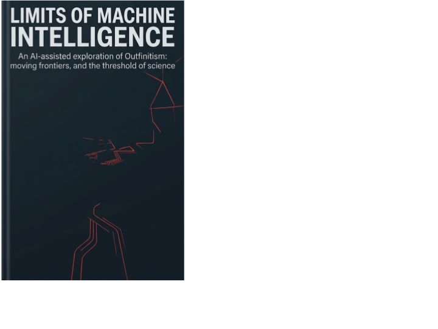

Executable Science · Axiologic Research Editions
Limits of Machine Intelligence
An AI-assisted exploration of Outfinitism, moving frontiers, and the threshold of science
An impossibility result may close one total procedure over an unrestricted domain. It does not automatically tell us what a finite machine can certify within a declared operational envelope.
Where a limit becomes a design question
Gödel, Turing, Rice, no-free-lunch results and alignment arguments are often gathered into one dramatic conclusion: intelligent machines face permanent limits. This book slows the conclusion down. It asks which theorem applies to which model, which quantifier is doing the work, and what remains possible once a system states its resources, verifier, frontier detector and fallback.
The proposal is not that mathematics has been defeated, or that an AI can certify itself without remainder. It is more modest and more useful: a global impossibility can coexist with complete local certification. A system may verify every case within its present envelope, name the boundary where the claim stops, and interrupt or escalate when it reaches it.
Three questions worth keeping open
Can a safety case have a moving frontier? The book explores layered, resource-aware safety cases rather than a promise of terminal containment.
What does self-improvement have to prove? Improvement is treated as a sequence of bounded revisions and external checks, not a final act of self-certification.
When is an AI-assisted inquiry science? The final chapters make the epistemic status explicit: hypotheses need sources, formalization, tests and independent criticism before they become established knowledge.
A boundary is not a failure of intelligence when it is visible, testable and able to stop the system.
A book against theatrical certainty
This is for readers who want the hard theorems without the easy fatalism. It offers a vocabulary for distinguishing what is impossible in principle, what is not yet verified, and what can be made dependable under stated conditions. The distinction matters whenever a machine is asked to act in the world rather than merely to sound convincing.